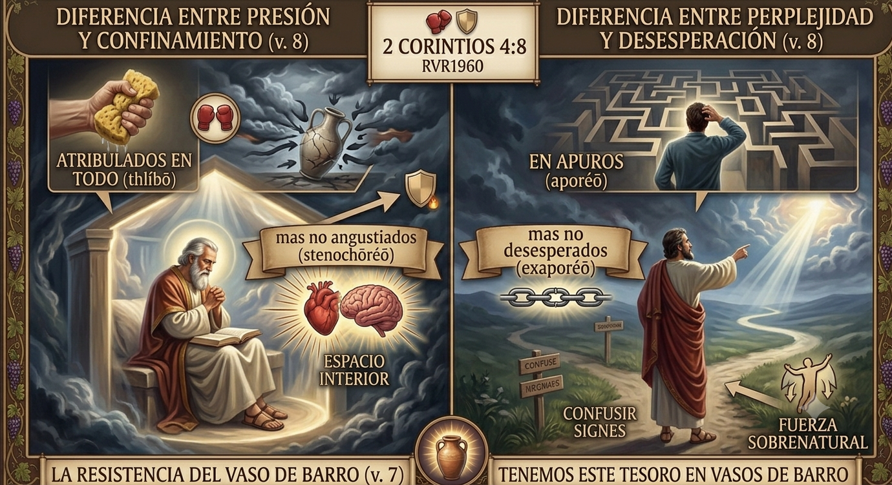

El lugar donde tu tormento se transforma en testimonio.
Somos una comunidad de fe en Palmdale, California, que cree en el poder de la restauración total. No nos importa tu pasado, nos importa tu futuro con Dios.
Mantente conectado y participa con nosotros este mes.
Te invitamos a nuestro servicio regular de la semana de 7:30 PM a 9:00 PM. Un tiempo para buscar a Dios en comunidad.
Nuestra celebración familiar matutina a las 9:00 AM. Ven con tus seres queridos a alabar y celebrar de manera especial a todos los padres de nuestra comunidad.
A veces la vida nos paraliza y el dolor de la espera se vuelve insoportable. Pero la parálisis no es tu final. Dios está moviéndose en la vida de su iglesia y quiere traerte de vuelta a un lugar de paz.
El evangelio no es una religión de cargas, es un camino de libertad. Jesús pagó el precio para sanar cada herida profunda. Si estás listo para experimentar una transformación real, hoy es el día para dar el primer paso.

"Que estamos atribulados en todo, mas no angustiados; en apuros, mas no desesperados;"
El apóstol Pablo expone con crudeza la realidad de nuestra vida en la tierra, pero introduce de inmediato una contraparte sobrenatural. Dios permite que seamos vasijas vulnerables de barro para que, cuando el mundo nos vea resistir de pie, entienda que el verdadero Héroe habita dentro de nosotros.
El ataque del entorno (Thlíbō) significa estar bajo una fuerte presión, comprimido o aplastado por los flancos (crisis familiares, financieras o culturales). Sin embargo, la respuesta del Espíritu impide la angustia (Stenochōréō), que significa "quedarse sin espacio". La paradoja radica en que el mundo te puede apretar por fuera, pero el Espíritu Santo ensancha tu capacidad interna. Hay presión, pero no hay confinamiento.
Estar en apuros (Aporéō) implica tener la mente lógica en cero, encontrarse perplejo, en pérdida, o carecer de recursos humanos. Es el momento donde dices: "Ya no sé qué más hacer". Pero el Reino evita el límite de la desesperación (Exaporéō), que es la rendición total. El diseño del Reino nos sostiene para que la confusión temporal no se convierta en una ruina permanente. No tener una salida clara hoy no significa que Dios haya perdido el control del mañana.
📌 Veredicto: La madurez espiritual no nos vuelve inmunes a las presiones de la vida, sino resistentes a sus efectos destructivos. El cristiano de hoy camina como un ancla (⚓): el entorno puede estar agitado y en constante turbulencia, pero nuestra fe permanece fija, inmóvil y segura en lo invisible. Golpeados por el entorno, pero sostenidos por el Eterno.
Creemos firmemente que la oración activa el poder sobrenatural de Dios. Nadie debería cargar con sus aflicciones a solas. Escribe tu petición abajo; nuestro equipo pastoral e intercesores estarán clamando por tu restauración total, tu familia y tus necesidades esta misma semana.
César Contreras
Hno. Henry Banderas
9:00 AM — Servicio Principal y Escuela Dominical
7:30 PM — Servicio de Intercesión Profunda
Nos encantaría recibirte en persona. Si tienes preguntas sobre nuestra comunidad, no dudes en escribirnos o visitarnos.